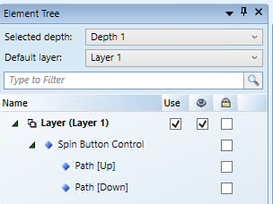

Draw a Spin Button Control
This procedure is just one example of how a Spin button command control can be drawn and configured to send commands.
- You have reviewed or completed the Preparing to Create Controls to Command Objects workflow.
- To create a new command control element on a graphic, from the File menu, select New Graphic
 .
. - From the Elements group, select any elements that you would like to use to create two buttons for the Up and Down commands in the Spin button.
NOTE: The Path or Polygon elements can easily be used to draw an UP or DOWN arrow. - On the canvas, position the elements to depict how you want them to command your point: on top of each other or side-by-side.
- Click Command Control
 , and draw a rectangular shape encompassing the buttons on the canvas.
, and draw a rectangular shape encompassing the buttons on the canvas. - With the command control selected on the canvas, from the Property View (Command Control Properties), expand the Command Control properties, and from the Control Type drop-down menu, select Spin Button.
- Navigate to the Element Tree view, select the element that represents the DOWN spin button, and hold down the CTRL key and select the Spin Button Control and right-click.
- From the menu that displays, navigate to Group, and then select Join or leave Command Control. Repeat Step 5 for the Up element.
- In the Element Tree, the two UP and DOWN buttons display as children of the Spin button control.

- The first child element represents the [up] button, whereas the second represents the [down] button. If the first element grouped with the Spin button control is the DOWN arrow, and the second grouped element is the UP arrow, change the order by using the Move Up and Move Down
 arrows from the Element Tree view.
arrows from the Element Tree view. - Click Save
 .
.